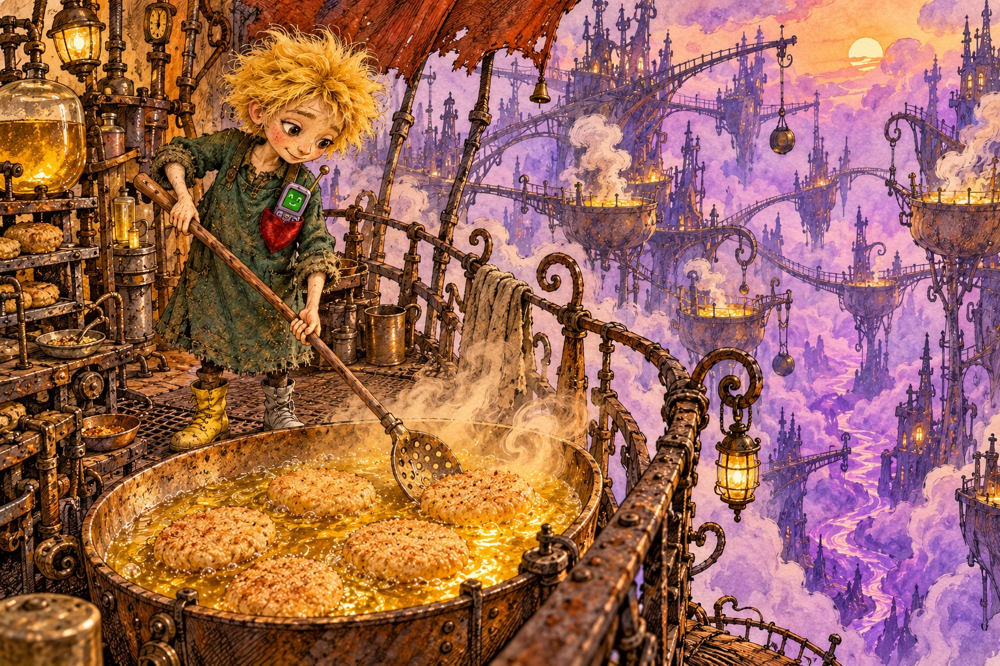
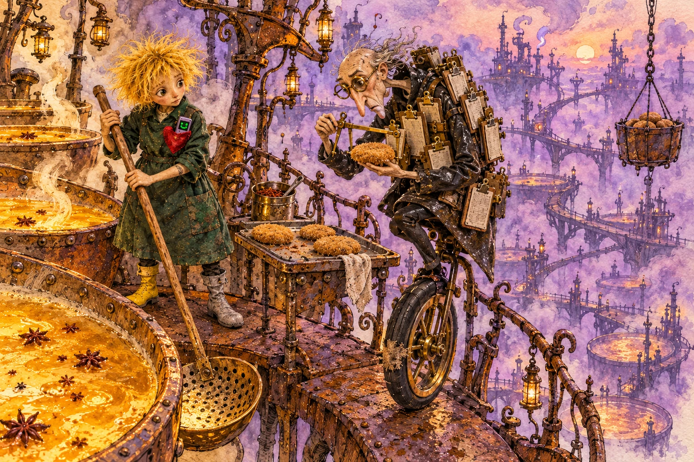
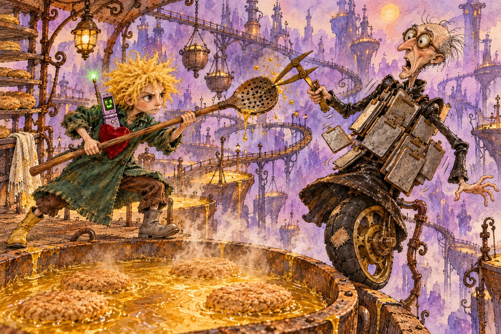
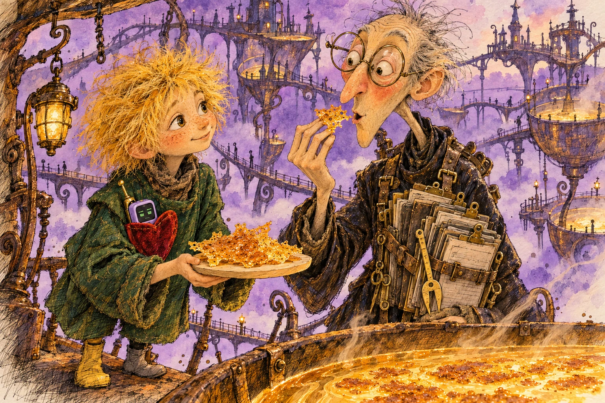
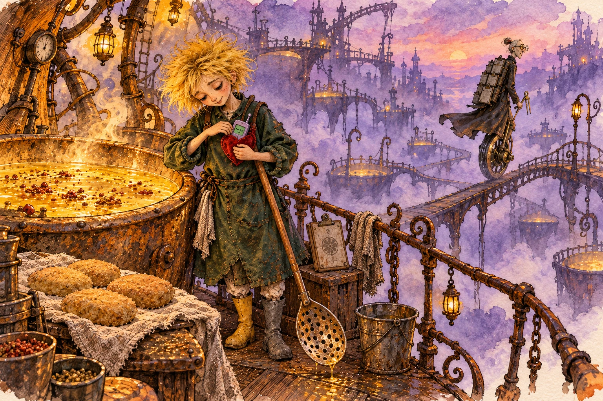

00The Simmer and the Clack

Vat Four breathed with a heavy, golden plup-glug.
A cloud of warm steam, smelling richly of toasted sesame and cracked coriander, lifted off the bubbling fermented kernel-lipids and condensed into tiny amber beads along the iron railing of the Slumping Shelf. Below the grating, three hundred feet of violet twilight hung motionless over The Sump.
Ollie leaned both elbows on the cross-handle of the three-meter drift-alder skim-spade. The bottle-green flax-waxed smock, stiff as dried bark from three seasons of lipid splash, creaked against Ollie's ribs. Under the left collarbone, the gadget in their velvet-lined heart pocket began to buzz with a sharp, dry vibration that felt like an angry bumblebee trapped in a matchbox.
A small plastic hinge flew open with a decisive THWAP-CLACK.
"Three bars," a tinny, indignant voice piped through the speaker grille. "Three miserable, shivering bars of signal, Ollie, and you haven't even wiped the coriander dew off my screen."
Ollie reached into the fifth pocket, pulled out the frayed red handkerchief, and gently fondly patted the pastel-lilac plastic of the nostalgic yet trendy Tele-Spindle 90. Its monochrome LCD screen flickered, clearing away two tiny grease droplets to reveal a blocky, green-lit pixelated face whose mouth was drawn as a jagged, disapproving zigzag.
"Good morning, Clack," Ollie said. Their voice was quiet and round, bland, barely louder than a simmering broth. "The vents opened four minutes early today. Today's lipid-broth is sweet."
"Damn that broth is humid," Clack snapped, its telescoping brass wire antenna extending two notches with an oily snick. "Humidity rusts my speaker coil. And look at my battery indicator! The second bar is blinking. If I am forced to watch you culture yeast without proper voltage, my capacitor will simply drop into emergency hibernation, and then who will tell you when the pressure drops?"
Ollie, sighing, compliant, did not argue. Arguments, as the old tender had once explained, made the plant-emulsion separate into sour grey water. Instead, Ollie reached into their third depleted nourishment pocket, a tiny wisp of froth at its lip, withdrew a curled ribbon of candied lemon peel wrapped in wax paper, curled it like a spiral tail, and tucked it into heart pocket right beside Clack's charging pins.
Clack gave a tiny, contented static crackle. Gratified. On the green screen, the zigzag mouth smoothed into a small, smug square.
"Acceptable," the phone murmured. "The citric acid tingles on my cathode. Now, lift the spade. Something is bunching near the western heating coil."
Ollie took two steps along the slick catwalk. The left boot, bright duckling-yellow, went sqwip. The right boot, matte battleship-grey, came down with a flat, hollow thud. Thud-sqwip. Thud-sqwip.
At the edge of the vat, the golden oil parted. Breaking through the foam came four pale, pillowy shapes, bobbing like sleepy ducklings in the spiced broth. They were the babbies: young vegan protein cutlets, barely an inch thick, their surfaces still porous and tender before the enzymatic heat could bake them into commercial firmness. Gooey good.
Ollie slid the flat of the drift-alder paddle beneath the first cutlet, squoosh sinuous. Seven teardrop holes in the scoop hissing as hot lipid drained. Quivering the velvety fermented cutlet rested on the wood's caress-grain, trembling slightly, fawn-colored with tiny specks of crushed thyme embedded in its soft crust.
"Softly," Ollie whispered to the broth. "Don't tighten up. Not yet."
Ollie turned the paddle with a practiced gentle flick of the wrist. The cutlet flipped over without a splash, settling into the golden lipid with a soft shhh-hiss that sent a ripple across the surface of the vat.
"It lacks tensile rigidity," Clack noted from the heart pocket, its screen peering out over the rim of the waxed flax. "If you package that for the Upper Concourse, the mastication index will register below sixty. The auditors will say it tastes like a cloud that gave up."
"Clouds don't taste like thyme," Ollie said, sliding the paddle beneath the second babbie. "And food shouldn't fight you back while you're eating it."
"Tell that to the District Council," said Clack.
Before Ollie could flip the third babbie, a thin, high-pitched screech scraped across the iron girders of the trestle. It was not the whistle of the steam vents. It was the sound of a dry brass wheel grinding against a rusted rail.
Clack's antenna suddenly vibrated, buzzing against Ollie's collarbone like a plucked banjo string.
"Incoming admina-friction," the phone squeaked, snapping its clamshell shut with a panicked CLACK. Through the plastic casing, its muffled voice hissed: "Monowheel on the east spur! Hide the thyme! Caliper is coming!"
01The Caliper of Grod

Monowheel did not stop so much as judder-wedge its screechy tall chassis into an expansion joint between two rusted, lipid-filmed iron plates.
Skeletal, preposterous brass contraption, tall and pitted-yellow. Single fat balloon tire, patched with square criss-cross strips of black gasket tape, gave a final shuddering flump. Over handlebars leaned Inspector Grod: long, paper-colored, sourly vigilant auditor whose knobby elbows poked through sleeves of an oiled slate-grey macintosh like two dry, pickled walnuts.
Across chest hung bandolier holding seventeen numbered, clattering zinc clipboards. Around neck, dangling on greasy braided leather thong, swung Caliper of Compression: two notched brass jaws with spring-calibrated dial marked in red Mastication Units.
Grod swung spindly, joint-creaking leg over saddle. Boots were mirror-black patent rubber, polished so fierce they reflected violet glare of The Sump.
"Shift thirty-two," Grod rasped, throat scraping like coarse pea-gravel kicked down an iron chute. "Sub-district West. Vat Four. Name: Ollie. Function: Lipid-tender third class."
Ollie remained planted on slick catwalk grating, hands resting over cross-handle of drift-alder spade. Dandelion fluff on Ollie's scalp parted neat down middle, curling into two tight, skeptical, ginger horns against rising sesame steam.
"Good morning, Inspector," Ollie said, gentle, unflustered. "Broth is ninety-two degrees. Today's yeast-protein has just begun to knit."
"Did not ask for weather report on soup," Grod snapped, unhooking Clipboard Seven with violent rattle of spring steel. Carbon pencil clicked between yellow, tea-stained teeth. "Upper Concourse requires seventy thousand metric cubes of firm-chew ration by Thursday bells. Cube dimension: four centimeters square. Density requirement: eighty-four on Shore Durometer scale. Minimum jaw-resistance: nine audible crunches before swallowing."
Grod stepped toward lip of Vat Four. Catwalk grating groaned under his patent-rubber heel. Through round iron-rimmed spectacles he peered down into golden, gently sighing broth.
Four pale, velvety babbies bobbed against wooden lip, thyme-flecked crusts trembling as convective heat circulated. Pillow-soft.
Spectacles slid three greasy millimeters down Grod's sharp, twitching nose. "What are those?"
"They are babbies," Ollie said.
"They are oval," Grod hissed, tapping zinc clipboard with flat of pencil. Tink. Tink. Tink. "Regulation calls for squares. Sharp, right-angled, disciplined corners. Corner gives consumer psychological impression of civic obedience. These look like... like cushions for an idle, daydreaming beetle."
"Corners get burnt," Ollie said mildly, placid. "Curves let lipid-fat roll past without scorching."
Grod unslung Caliper of Compression. Notched brass jaws parted with sharp clack-whir as thumb spun tension wheel. "We shall test resistance to compression under standardized mandibular force."
Cold metal jaws reached down toward tender floating babbies.
Inside Ollie's heart pocket, red velvet lining gave frantic, vibrating jerk. Muffled hiss rose through waxed flax, tiny and hot as an escaping steam-valve:
"Ollie, if he clamps that babbie before rind sets, whole vat curdles into porridge-mush! Kick his monowheel!"
02The Clack-Interference

Ollie did not kick monowheel. Violence, as retired tender had scribbled on margin of Vat Seven's brass valve-log, always knocked scale off thermometer.
Instead, Ollie brought broad flat of drift-alder paddle down across vat rim with hollow, resonant thwump.
Alder-grain formed pale barrier between descending brass jaws of caliper and tender floating babbie. Caliper teeth struck dry wood with angry, vibrating ping.
"Obstruction!" Grod barked, dry walnut-elbows locking rigid. Carbon pencil snapped clean in half, dropping two brittle black splinters through grating. "Interference with certified biometric audit! Municipal Code seventy-two! You harbor non-compliant, unauthorized protein!"
Ollie looked Grod level in spectacles. "Pinch it now, steam escapes. Takes three slow hours to knit velvety crumb. Puncture rind, turns into porridge."
"Porridge is accounted for under Schedule D!" Grod shouted, round lenses fogging milky-white from lipid vapor. "Porridge is taxable by liter! Soft cutlet is an administrative anomaly! Soft cutlet is treason against jawbone!"
Caliper rose high, spidery wrist cocking to jab around paddle edge.
At that exact split-second, velvet heart pocket on Ollie's smock erupted.
Clamshell flew open with explosive snap like dry hickory walnut popped in vise: THWAP-CLACK.
Telescoping antenna shot upward through sesame steam, extending all six brass joints until tip quivered four inches from Grod’s quivering chin. Monochrome LCD flared electric, venomous lime-green.
BEEEE-BOOP-KRRRR-SHHHH.
Noise blasting from miniature speaker grille was ferocious, ear-splitting cocktail: screechy dial-up static, boiled tea-whistle, and two iron ore-trams grinding sideways on greasy turntable.
Grod hopped. Both patent-rubber boots cleared grating simultaneously. Seventeen zinc clipboards across chest clattered like a tray of dropped brass spoons. Rattle-bang.
"ATTENTION AUDITOR," Clack brayed through speaker-mesh distortion, vibrating so fierce in heart pocket that Ollie’s ribs buzzed. "PRIORITY OVERRIDE FROM CENTRAL EXCHANGE. CODE EIGHT-ZERO-EIGHT. IMMEDIATE MASTICATION SUSPENSION ORDER."
Grod froze on slick catwalk, clutching clipboards with chalky, shaking fingers. Round spectacles hung askew from left ear. "Central... Central Exchange? Down here on Sump spur?"
"DO NOT PROBE POROUS PHENOMENON," Clack crackled, green screen flashing frantic, blocky bitmap of an exploding megaphone. "PHASE-B ENZYMATIC FERMENTATION IS FULLY EXPEDIENT. MECHANICAL PENETRATION OF VAT FOUR WILL TRIGGER IMMEDIATE ELECTROMAGNETIC FINE: FORTY THOUSAND CREDITS DEDUCTED DIRECT FROM PENSION LEDGER."
Grod’s mouth dropped slack. Single bead of condensed coriander steam dripped off hat brim, splashing warm onto lower lip.
"Forty... forty thousand?" Grod wheezed, stumbling two heel-clattering paces backward until heels struck balloon tire with muffled whumpf.
Clack snapped clamshell half-shut with satisfied click, leaving glowing slit of lime-green pixel-eye peering over waxed flax.
"And besides," Clack muttered in haughty, tinny sibilance, "your caliper jaws are three millimeters out of true, you ridiculous, rusty scarecrow."
03The Broth-Crust

Grod remained pinned against monowheel, knobby knees trembling inside damp oiled macintosh.
Across chest, seventeen clipboards hung crooked, carbon flimsy-papers fluttering like grey moth-wings in warm updraft. Shaking hand rose to straighten askew spectacles, fingers smudged greasy with graphite dust.
"Electromagnetic fine," Grod croaked, voice papery thin. "Section four. Pension ledger is non-negotiable. But... Shore Durometer..."
His empty belly gave cavernous, squelching groan like wet rubber boot sucked out of deep creek-mud. Glump-squelch.
Ollie did not gloat. Patient, unhurried, Ollie set drift-alder spade upright against rim of Vat Four, reached into second pocket, and drew out shallow saucer whittled smooth from pale alder-burl. Tucked behind sat curved sheep-horn salt-spoon.
Ollie leaned over western coil where lipid-broth simmered at sweetest golden bubble. At vat edge, where foaming fermented kernel-lipids touched cool iron rim, broth had baked into delicate, lace-spun crust: amber-gold, wafer-thin, sizzling quiet with microscopic beads of sesame and crushed thyme oil.
With tip of horn spoon, Ollie lifted warm triangular shard. Crust broke away from iron with crisp, brittle snap.
Warm shard settled onto wooden saucer. Three grey grains of crushed rock-salt dusted across amber surface from greaseproof pocket pouch. Ollie stepped light across catwalk grating. Thud-sqwip. Thud-sqwip.
Saucer hovered level with Grod’s lowest zinc clipboard.
"Consuming uncertified sample during active audit," Grod whispered, eyes fixed on warm fragrant triangle, "is automatic demotion to Third-Class Pen-Pusher."
"Throat sounds like an empty pipe, Inspector," Ollie said. Yellow dandelion-fluff on Ollie's scalp relaxed, settling into round, peaceful puff. "Babbies won't finish knitting for twenty minutes. Nobody can measure chew-density on an empty, whistling gullet."
Grod looked from Ollie’s wide hazel eyes down to saucer. Curl of savory, toasted cumin steam rose off warm wood, drifting straight into Grod’s twitching left nostril.
Ink-stained thumb gave hungry twitch.
Slowly, cautious as someone probing loaded brass mousetrap, Grod pinched amber crust between chalky, stiff fingertips. Heat sank direct into chilled knuckles, thawing stiff joints with sudden, prickling comfort.
Into mouth went shard.
Sound was single, immaculate crunch, followed by profound, reverent quiet across Slumping Shelf.
Eyes rounded behind spectacles. Dry parchment skin of cheeks flushed faint dusty-rose. Salt hit tongue first, brisk and clean, followed by deep nutty coat of slow-fermented lipid-oil and fragrant green punch of bruised thyme. Brittle crust yielded without fight, melting into rich, velvety savor that traveled down throat like swallowed cashmere blanket. Pure soup-comfort.
Grod ceased chewing. Stood stock-still on iron deck, Adam’s apple bobbing twice as savory warmth pooled in hollow, audited chest.
Inside velvet pocket, Clack’s antenna gave tiny sarcastic twitch. Single skeptical green pixel-eye peered through hinge slit.
"Well?" Clack piped through speaker grille. "Enough jaw-resistance for you, old crow, or shall we fetch a paving brick to gnaw?"
04The Twilight Stamp

Grod did not speak for twenty-seven measured seconds.
Around them, Slumping Shelf settled into lazy afternoon lull. Second steam whistle down on Lower Concourse gave long, wheezing sigh, puffing feather of white vapor that drifted lazy through catwalk grating to melt against violet clouds.
Single clear droplet pooled in outer corner of Grod’s right eye. With stiff, jerky wrist-flick, he dragged edge of Clipboard Seven across cheek, leaving faint indigo streak of carbon ink right beside sharp cheekbone.
Ollie did not point it out. Indigo smudge matched yellow cumin dust on Ollie’s own nose like pair of mismatched cancellation stamps.
Grod peered down at Caliper of Compression dangling cold from neck. Notched brass jaws looked suddenly foolish, tiny, pinched and pale against warm, golden, bubbling expanse of Vat Four.
With slow, deliberate, ritual motion, Grod unclipped heavy circular brass stamp from utility belt. Stamp die sank into pocket tin of indelible purple ink with wet, squelching plop.
Down came stamp onto center of Clipboard Seven with resounding, iron-deck THWACK.
In blank box marked Mandibular Resistance Score, stubby carbon pencil scratched four lines of tiny, spidery script:
Vat Four certified under Emergency Exemption 9-B. Category: In-situ Tenderness Protocol. Mastication audit deferred seventy-two hours to prevent catastrophic crumb rupture. Mechanical calipers strictly forbidden within ten paces.
Grod blew across wet purple seal. Exhale smelled sweet of toasted sesame.
Clipboard snapped back onto chest bandolier with decisive spring-clack. Spindly leg swung over yellow monowheel saddle; bony hands gripped rusted handlebars.
"Tender Ollie," Grod said. Voice remained dry-gravel, but sharp grit had rolled smooth, like creek pebbles warmed in summer sun. "Thyme is... within municipal tolerances. Salt is thoroughly adequate."
"Thank you, Inspector," Ollie said, chin propped on cross-handle of drift-alder spade. "Mind loose bolt on east trestle spur. Rattles wicked when you pedal fast."
Grod offered no verbal receipt, but heels shoved pedals down. Patched balloon tire gave soft, rhythmic flump-kree-chack, wheeling along iron spur until long, paper-thin silhouette dissolved into lavender haze of The Sump.
Third Whistle blew far below.
Above catwalk, violet twilight deepened into rich, velvety plum-dark. Overhead sodium lamps flickered twice and settled to low, cozy orange ember, casting long, peaceful shadows across iron plates.
Ollie turned back to vat. With two gentle, practiced, rhythmic swooshes of drift-alder paddle, Ollie flipped remaining two babbies. Both rolled lazily through hot golden lipid, glistening fragrant beneath amber glow, tucking shoulder-to-shoulder with companions like four sleepy loaves proofing in gentle oven.
From heart pocket came low, mechanical whir. Clack’s green LCD flickered, battery icon blinking single, exhausted hollow bar.
"One bar," Clack murmured, speaker grating with drowsy, contented static. "Barely juice enough to dream about telephone poles, Ollie. Did you... did you see how fast old scarecrow swung that stamp?"
"I saw," Ollie whispered.
Ollie reached into third depleted pocket, drew out square of static-charged rabbit-flannel, and swaddled pastel-lilac plastic snug. Down went bundle into red velvet pocket, resting warm against knit wool of undersweater.
"Good night, Clack," Ollie said.
Inside heart pocket, tiny clamshell hinge gave one final, drowsy, satisfied clack. Green pixel-light went dark, and across Slumping Shelf, nothing sounded but slow, rhythmic, sleepy plup-glug of babbies stewing cozy through the dark.